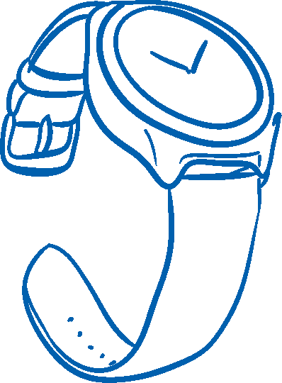
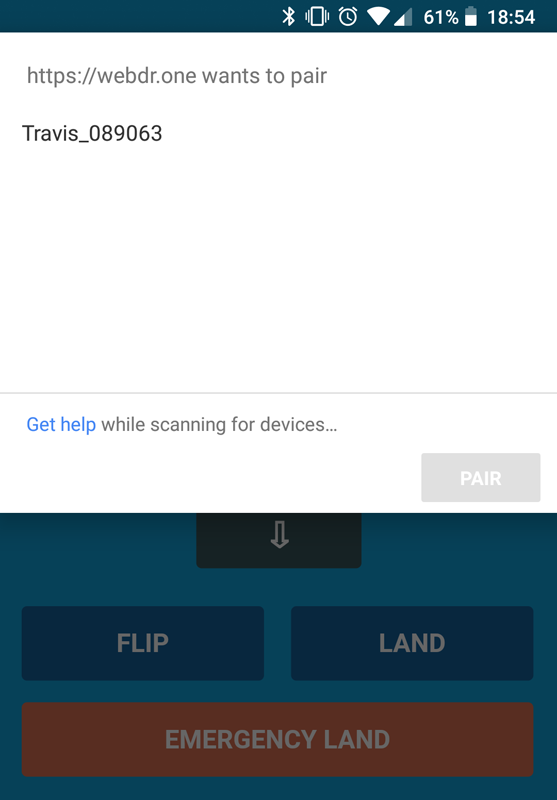
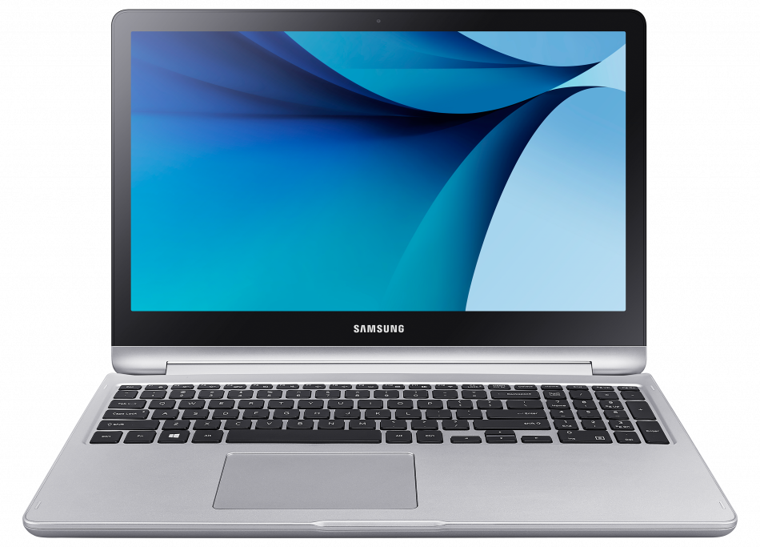

Web Bluetooth
for Fun and Profit



“Lets Bluetooth endpoints form networks among themselves, instead of having a central hub... a big advantage since it overcomes the limited range.”
“Particularly well-suited for... building automation, smart lighting, beacons & ...industrial IoT”


“The web browser is arguably the most important of all platforms, especially for enterprise applications”





Slides controller
Puck.js via Web Bluetooth

Nordic Thingy:52
Central

Peripheral
|  | |
CentralWeb Bluetooth |
PeripheralBleno (Node) & Web Sockets |

| Property | Enabled |
| Broadcast | |
| Read | ✅ |
| Write without response | |
| Write | ✅ |
| Notify | |
| Indicate |

navigator.bluetooth.requestDevice({
filters: [
{ namePrefix: 'Travis_'}
],
optionalServices: [
// Service UUIDs we want to use
]
})
...
.then(device => device.gatt.connect())
.then(server => {
// Get Service...
return server.getPrimaryService(serviceUUID);
})
.then(service => {
// Get Characteristic...
return service.getCharacteristic(characteristicUUID);
})
...
.then(characteristic => {
return characteristic.readValue();
})
.then(value => {
console.log('Value is ' + value.getUint8(0));
})
.catch(error => { console.log(error); });